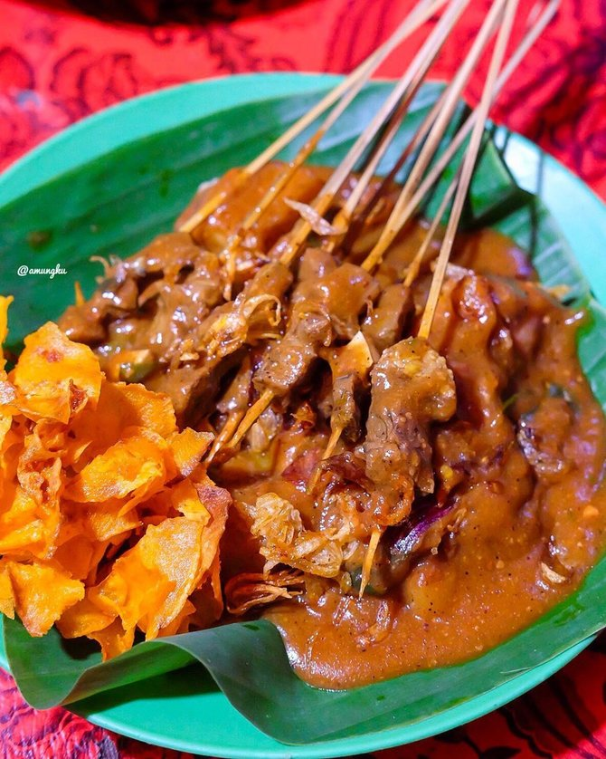

Isi form pemesanan dengan klik tombol pesan di bawah
Kuliner Khas Taplau: Uda Marpin
Diposting pada 14.00 WIB, 27 november 2023

Sate padang adalah sebutan untuk tiga jenis varian sate di Sumatera Barat, yaitu sate padang,
sate padang panjang dan sate pariaman. Sate padang memakai bahan daging sapi, lidah, biji atau jeroan
(jantung, usus, dan tetelan) dengan bumbu kuah kacang kental yang ditambah dengan cabai yang banyak sehingga rasanya pedas..